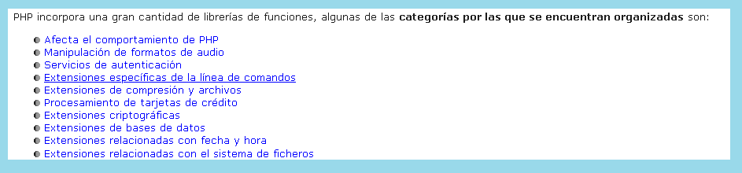

RAZÓN 7: Las funciones son reutilizables
Las funciones creadas para el funcionamiento de determinado sistema, pueden ser almacenadas en una biblioteca, en donde preposaran para ser utilizadas en cualquier momento ya sea por el mismo sistema o por otro el cual tenga acceso a dicha biblioteca y estas pueden ser propias, colaborativas o privadas.
